What Is Data Journalism?
Jacob Harris (@harrisj) & Derek Willis (@derekwillis)
The New York Times
- Data is a source for journalism
- We find the stories within
- Near and Far
What We Do
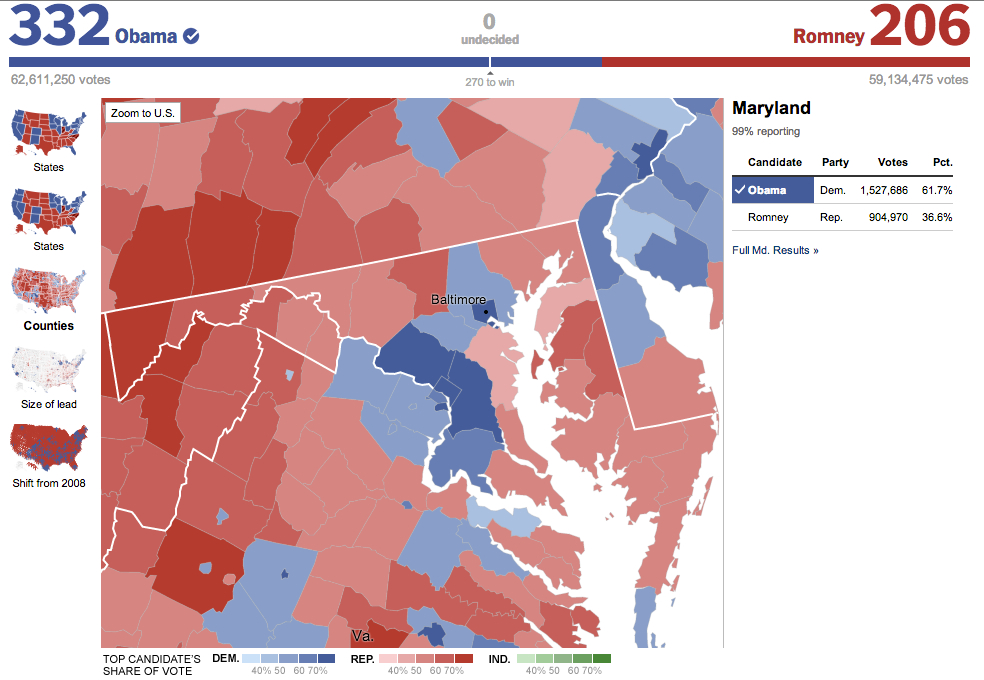Revealing the Narrative
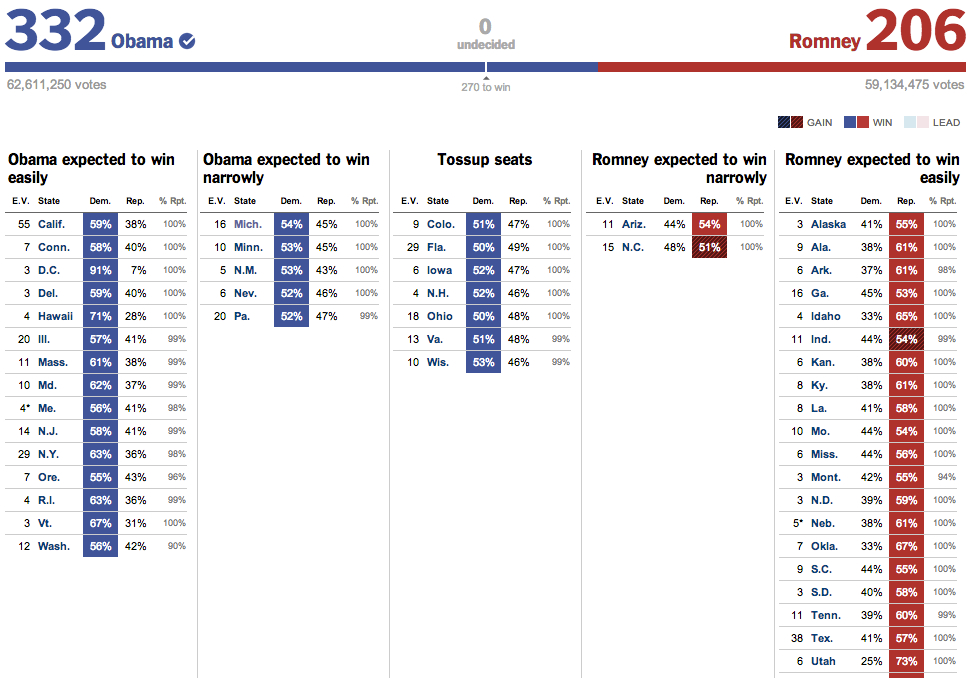Campaign Finance
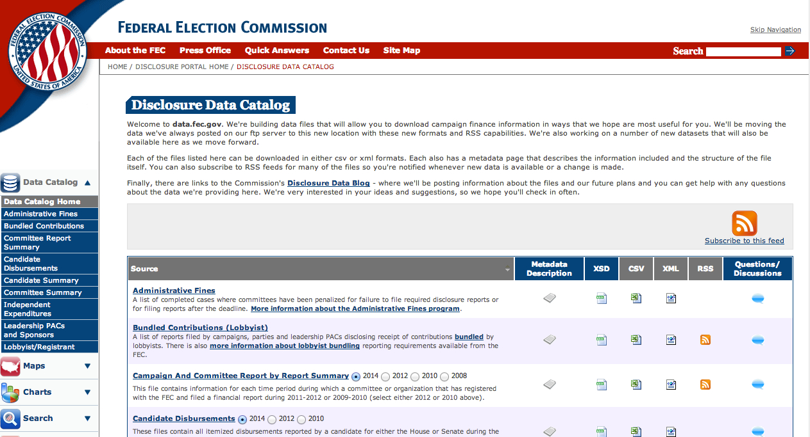Looking at SuperPACs
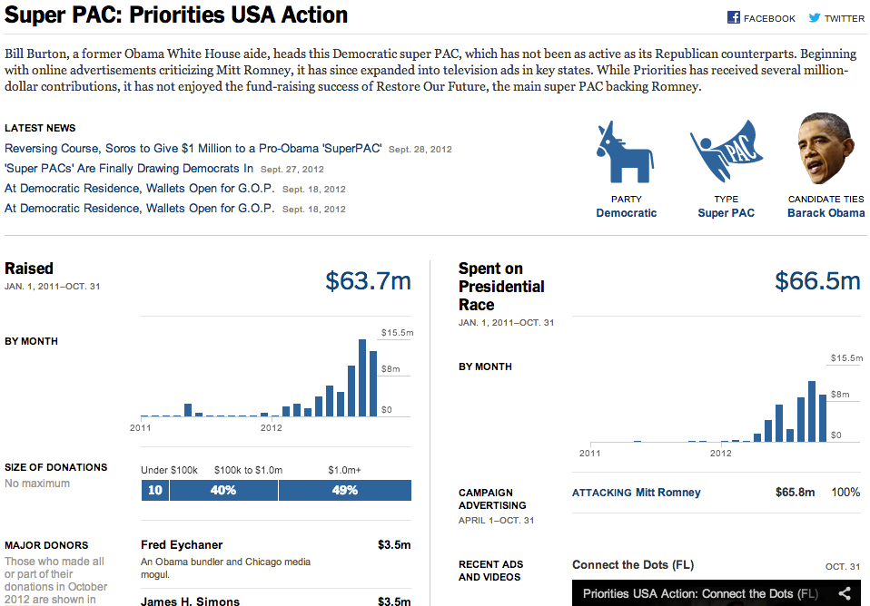Presidential Campaigns
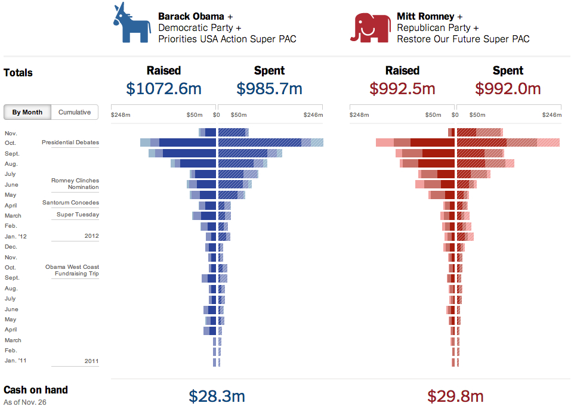Congressional Data
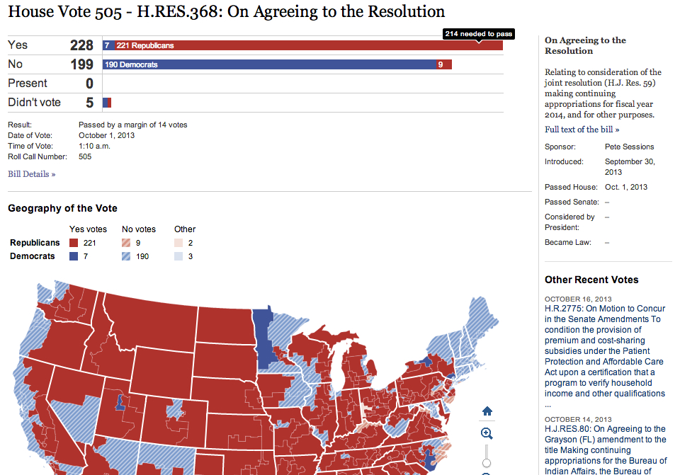Food Data
TKNear and Far
A common technique for making large datasets accessible.
- The Far reveals broad trends
- The Near presents local impact
Far

Near
Far

Near
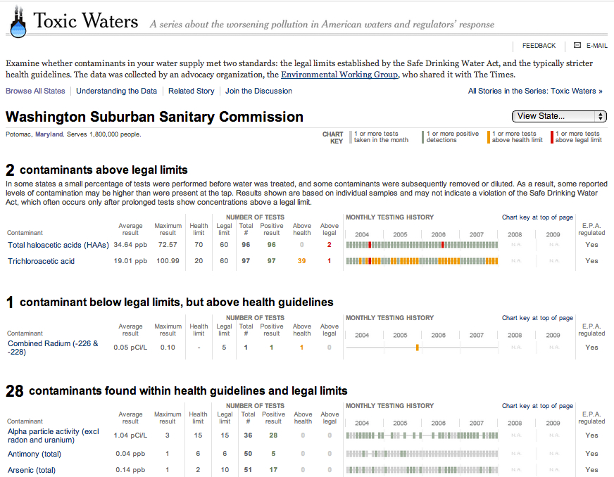Near
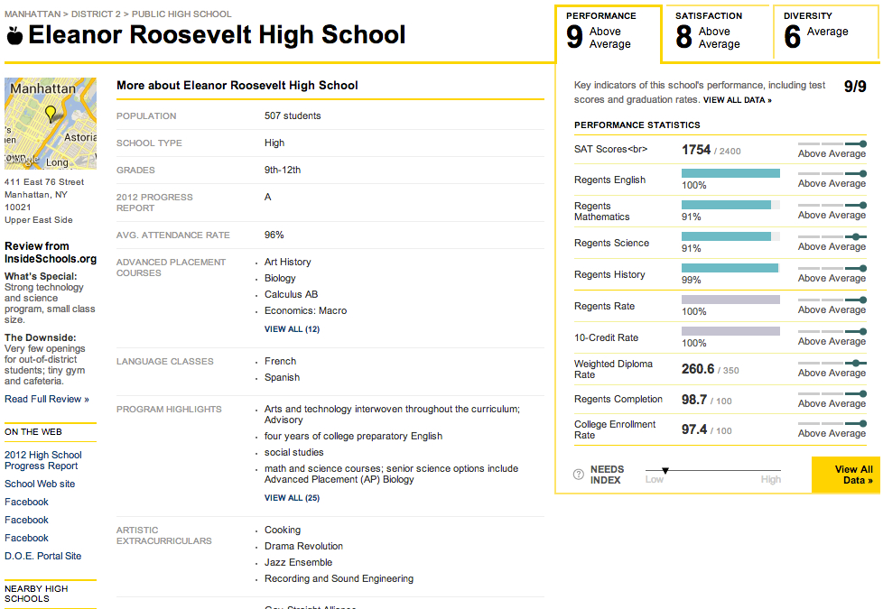Journalism and Government
Joining Across Datasets
Good example of that?When Things Change
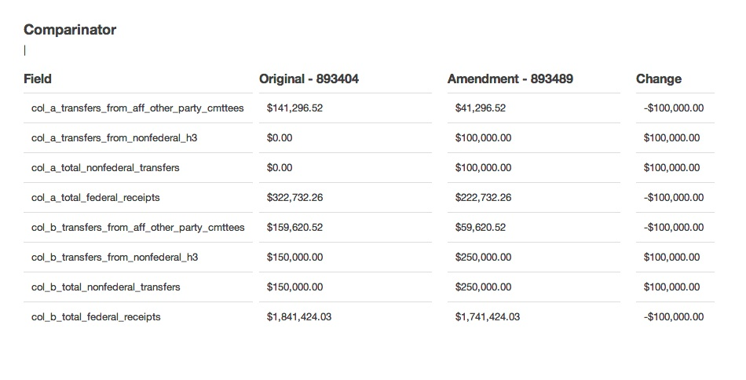How We See the Government
- How do we see the forest for the trees?
- We need guides...
The Factory
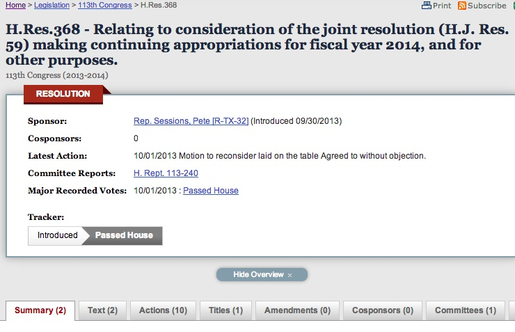Seeing Updates
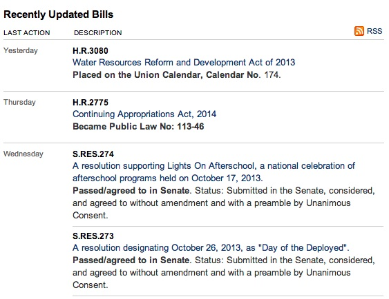Highlighting Needles
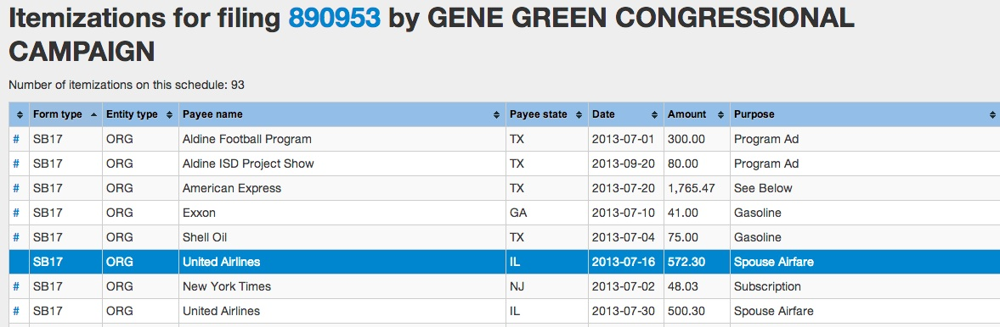Collaborating on Common Needs
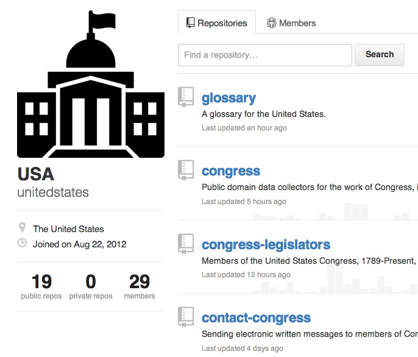Further Resources
Other Organizations
- ProPublica
- NPR
- The LA Times
Learning Resources
- Source